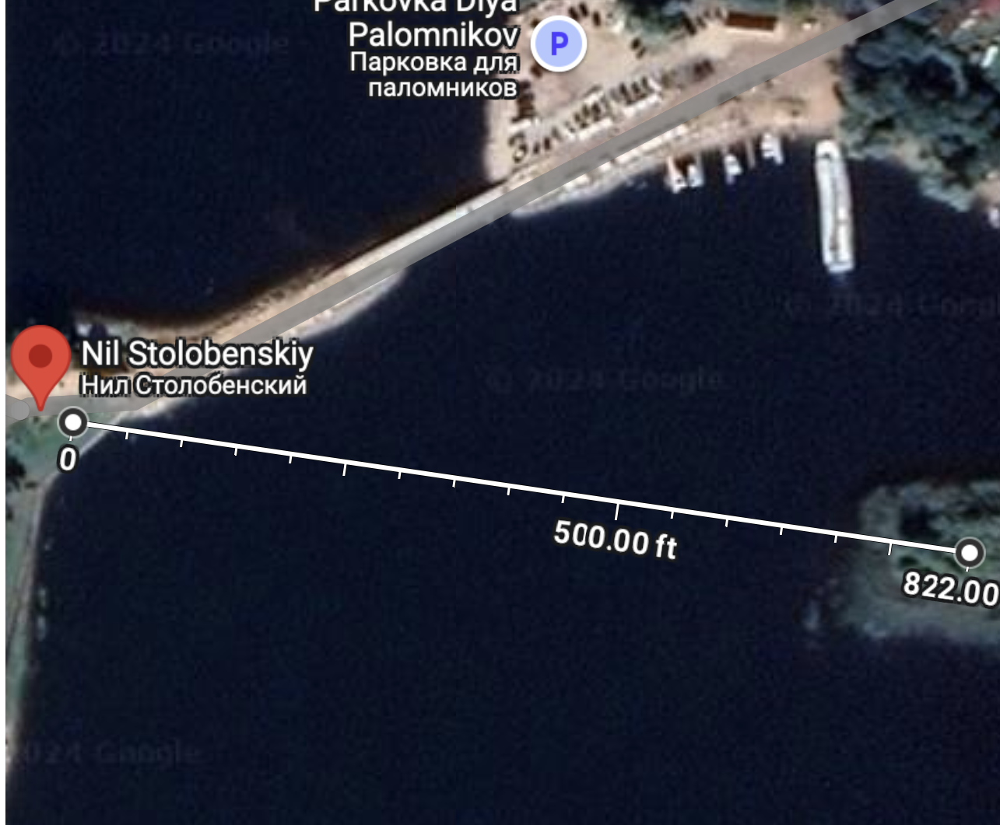
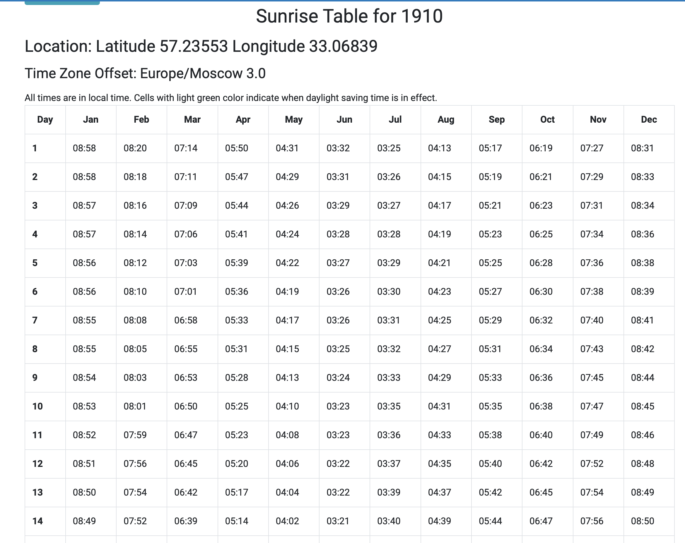
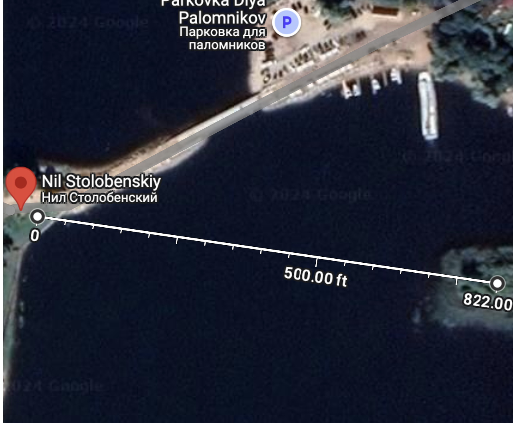
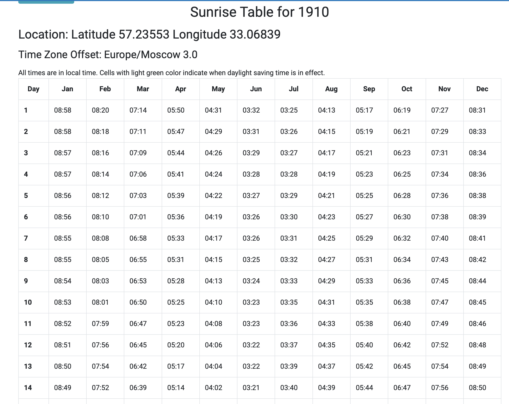

Hall of fame


Emir, SSIM + Rotations + Translations Church, SSIM + Rotations + Translations + Linear Contrast scaling Statue, SSIM + Rotations + Translations .
Emir, SSIM + Rotations + Translations Church, SSIM + Rotations + Translations + Linear Contrast scaling Statue, SSIM + Rotations + Translations .
The goal of this assignment is to take the digitized Prokudin-Gorskii glass plate images and, using image processing techniques, automatically produce a color image with as few visual artifacts as possible. (from the project website)


Naive Approach An initial approach is to take the l2 error between the images on some window of translation. This becomes infeasable with large image or window sizes.
Image Pyramids Image pyramids are used to speed up computations regarding the comparison of two images. The hope is that the image will obtain relevant information/structure to the operation when it is scaled down. There’s a few ways to go about the resizing, for example we could “summarize” a group of pixels by taking their average. I used sk.transform.rescale to create each level of the pyramid.
Results Dismal, effectively no images were really aligned correctly, the l2 norm on it’s own is not verry good as a metric; there's a lot of hypothetical bad alginments with lows costs.


Cross Correlation I also tried to use Cross Correlation but there was essentialy no imporvment.
General ideas There's a few ways to speed up our general computations. In the end we are taking the convolution of two images; there's a whole project in cs61c dedicated to doing this fast (and furiously). We could also implement an FFT based convolutions algorithm which has a lower time complexity. However, since at this stage I was not sure what other metrics I might think of using other than l2 and I could not guarantee that they would all be compatible with my convolutions algorithm I opted to simply parallelize the search window.
Parallelism I separated the search function from align and parallelized it using concurrent. I also tried to make a parallel version of np.roll but it wasn't working as desired.
Quality of Life The image pyramid was improved to allow us to specify the base of the pyramid. This is important because sometimes we don't actually need the greatest resolution window at all. I also implemented the ability to configure the amount of translations/rotations/zooms depending on the level and I made config dictionaries so that it's easy to change the metric and search window parameters. Finally we made an automatic crop function that crops the borders so that the edges of the image don't throw off the comparisons.


Motivation The problem with the l2 norm is that it has no way to focus on what is important about the image, structure, edges, reflectance, or luminance. There are too many possible configurations of the images where the l2 norm gives a similar/or lower value than the desired optimal solution. So instead we look towards metrics that incorporate that information (or we generate features, more on that later)
SSIM Introducing Strucutal Similarity Index Measure: SSIM. According to the wikipedia article "SSIM is a perception-based model that considers image degradation as perceived change in structural information, while also incorporating important perceptual phenomena, including both luminance masking and contrast masking terms."
Results Out preforms l2 and CNN significantly; does not require any aditinal features to align the images correctley but is substantialy increases the runtime.


Motivation If only we could tell the computer to just focus on the emirs beard.
Tricks and Features. We want to extract usefull features from the mess of raw pixels, preferably somthing that has a strong tie to the objects in the picture. Intuitivley if all we have to match is a beard, or a basket, or a cube, there's less things that can go wrong. Even with the l2 nom.
The first thing you might think about is gradients or edge detection (mentioned in the project spec). But there's a simple , efficient solution that embodies the same motivation. By applying a threshold filter -ie (arr[arr > median] = 255 arr[arr <= median] = 0) We've turned the problem into matching the bright parts of the image.
Results Matching with a filter and the naive l2 norm results in a program that is much faster than SSIM can can recover almost all of the images without issue (except for the most difficult ones like emir)
The images above are an example of us brightening each of the channels independently and then matching them together. Below is the algorithm run on some of the other images.
Limitations WLOG blue objects will have low red and green brightess, meaning that they become harder to match.

This part is self explanatory, after finding a good center we can scan over a small range of possible zooms and rotations to find an even better matching.


Some of these images have an "old picture" quality to them (they are 100 years old). I tried to apply linear contrast scaling in hopes of making the images sharper. Linear contrast scaling works by first cliping the brightness values (say 5th to 95th percentile) and then stretching the values in between linearly across the new range. Here are three pictures of the church with linscale, (10%, 98%) (10%, 90%) (20%, 100%). Note that as the range gets smaller, a larger group of pixels go to the two extremes (white/black) and the contrast increases clearing up details of the image.


White balancing White balancing has two parts: step 1 estimate the iluminant map, step 2 try to counteract the iluminant map. The first column is the original image. The second column corresponds to the avg methodolgy where we estimate gray to be the average of all the pixels in each channel and then we correc. Finally the last column is the max methodoly, where we take the max value in each channel and assume that it is true white <./p>
Limitations There are smarter ways to estimate the iluminant map (retinex, more on that later). The max method returned the same image as the original because true white apears in both these images. <./p>


 



This approach is very limited due to the level of guess work involved but I still think it is both creative and interesting enough to include. The monastary in the monastary picture still stands and can be found in google maps. Using photos of the location, we can estimate where the photo was taken, the bearing of the photographer and the distance from the photographer to one of the trees on the left of the photo and it's coressponding shadow. using an estimate of the camara's dimensions and a google search of the aproximate distance between the photographer and the tree, we can guesss the height and bearing of the shadow of the tree. Now we have a solar angle that can reveal the time of day with a solar calculator. We can use the time of day to guess the aproximate illuminante of the sunlight on the day when the picture was taken. Then we can try to counteact that iluminant.

Finally I attempted to implement and apply retinex, but for the life of me it did not work :( I don't know it it's because these images don't meet the gray world assumption at all, or if i'm just having trouble with the tif format. Here is my couple of attempts.
Speculation on future techniques...
Wikipedia Articles seen: blogs seen: